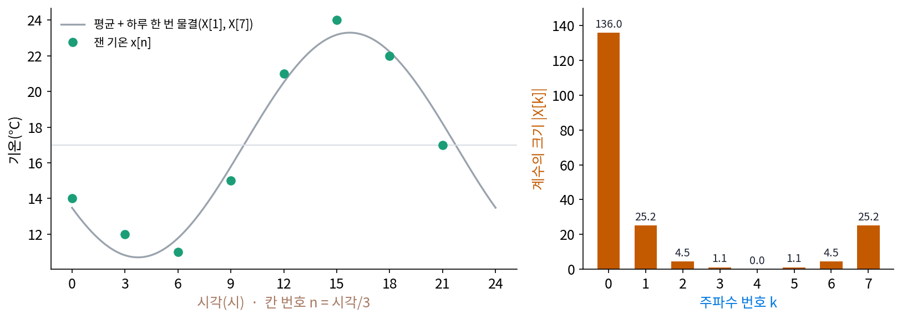
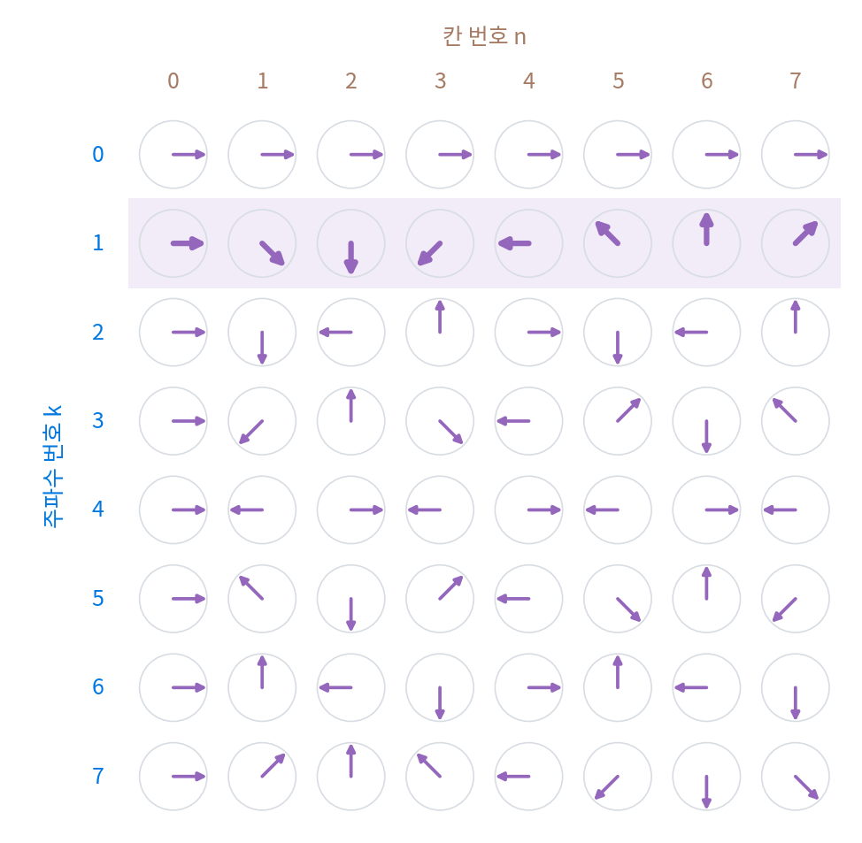

이산 푸리에 변환과 고속 푸리에 변환
이 장의 물음
닫힌 곡선을 도는 화살표들의 합으로 적을 때, 화살표 하나의 길이와 방향은 곡선을 거꾸로 돌려 놓고 평균 내서 구했다(복소 푸리에 급수). 그런데 손에 들어오는 신호는 대개 이어진 곡선이 아니라 숫자를 늘어놓은 칸이다. 기상청은 기온을 몇 시간마다 한 번 재고, 휴대폰의 가속도계는 1초에 수십 번 가속도를 잰다. 칸이 여덟 개면 계수는 몇 개를 구해야 하고, 그 계수만 남기고 칸을 버려도 칸을 하나도 틀리지 않고 되살릴 수 있을까?
칸의 값이 모두 실수인데 계수는 복소수로 나온다. 실수 여덟 개를 복소수 여덟 개, 숫자로는 열여섯 개로 바꾸면 정보가 늘어난 것일까? 칸이 백만 개쯤 되면 계수 하나에 곱셈이 백만 번, 계수 전부에 백만의 제곱 번이 든다. 1초에 곱셈 10억 번을 하는 컴퓨터로도 한 번 바꾸는 데 십몇 분이 걸리는 계산을, 오디오 편집기는 어떻게 눈 깜짝할 사이에 해낼까?
ML에서도 같은 장면이 나온다. 2021년 구글의 연구자들은 트랜스포머의 어텐션 자리에 배울 것이 하나도 없는 푸리에 변환을 넣고도 문장 분류 점수를 꽤 지켰다. 긴 글을 다루는 언어 모델 가운데에는 어텐션 대신 글 길이만큼 긴 합성곱 커널을 쓰면서 그 합성곱을 푸리에 변환으로 계산하는 것도 있다. 배우지 않는 변환이 어떻게 토큰을 섞고, 왜 빨라질까?
이 장은 다음 물음에 차례로 답한다.
- 칸 N개의 신호를 몇 개의 계수로 다시 적을 수 있고, 그 계수에서 칸을 그대로 되살릴 수 있을까?
- 실수로 된 칸의 계수는 왜 둘씩 서로 닮은 꼴로 나올까? 거꾸로 도는 화살표는 무엇을 하는가?
- 계수를 전부 구하는 계산에서 같은 곱셈을 되풀이하는 곳을 찾아 다시 쓰면 곱셈이 얼마나 줄까?
- 칸 번호 k는 실제로 몇 Hz의 물결일까? 칸 끝에 0을 붙여 칸 수를 늘리면 주파수를 더 잘게 가를 수 있을까?
이산 푸리에 변환: 칸 N개를 계수 N개로 다시 적기
점 8개로 된 네모를 도는 화살표로 다시 그릴 때, 주파수 k인 화살표(한 바퀴 그리는 동안 k바퀴 도는 화살표)는 점마다 e−ikt를 곱해 돌기를 멈추게 한 뒤 여덟 값을 평균 내서 구했다. 그때 주파수를 −3부터 4까지 여덟 개만 계산했다. 점이 여덟 개면 화살표도 여덟 개면 될까? 주파수 5인 화살표를 따로 계산하면 새로운 것이 나올까? 그리고 그 여덟 화살표만 들고 있으면 점 여덟 개를 하나도 틀리지 않고 되살릴 수 있을까? 칸으로 적은 신호를 다룰 때마다 계수를 몇 개 구해야 하는지, 그 계수에서 칸을 되살릴 수 있는지를 묻게 된다.
역사: 띄엄띄엄 본 궤도를 사인과 코사인으로 잇기
이 계산을 처음 필요로 한 사람들은 천문학자였다. 행성이나 소행성은 한 바퀴 돌면 제자리로 오니, 하늘에서의 자리는 주기 함수다. 그런데 관측은 띄엄띄엄 몇 번뿐이다. 관측한 점들을 모두 지나는 사인·코사인의 유한한 합을 찾으면 관측하지 않은 날의 자리도 짐작할 수 있다. 하이드먼(Michael T. Heideman), 존슨(Don H. Johnson), 버러스(C. Sidney Burrus)가 1984년에 원문을 하나하나 찾아 정리한 바에 따르면, 1754년 클레로(Alexis-Claude Clairaut)는 같은 간격으로 잰 값에서 코사인만의 합의 계수를 구하는 식을 냈고, 라그랑주(Joseph-Louis Lagrange)는 1759년과 1762년에 사인만의 꼴을 냈다.
사인과 코사인을 함께 쓰는 일반적인 식은 가우스(Carl Friedrich Gauss)의 원고에 나온다. 그는 소행성의 궤도를 몇 개의 관측점으로 정하는 문제를 다루면서, 한 주기를 N칸으로 나눠 잰 값에서 계수를 구하는 식을 적었다. 하이드먼과 동료들은 이것을 지금까지 찾은 가장 이른 「일반적인 이산 푸리에 변환」의 식으로 꼽았다. 원고 「새로운 방법으로 다룬 보간 이론(Theoria interpolationis methodo nova tractata)」의 뒷부분에는 이 계산을 빠르게 하는 방법도 들어 있었는데, 그 이야기는 계산량을 따지는 자리에서 한다.
하루 기온 여덟 칸
손으로 끝까지 계산할 수 있으면서 결과를 눈으로 확인할 수 있는 예가 좋다. 하루 기온은 새벽에 가장 춥고 오후에 가장 덥다는 것을 누구나 겪어서 안다. 하루를 3시간마다 여덟 번 잰 기온(°C, 직접 정한 값)을 칸 번호 n = 0, 1, …, 7에 적는다.
| 시각 | 0시 | 3시 | 6시 | 9시 | 12시 | 15시 | 18시 | 21시 |
|---|---|---|---|---|---|---|---|---|
| 칸 n | 0 | 1 | 2 | 3 | 4 | 5 | 6 | 7 |
| 기온 x[n] | 14 | 12 | 11 | 15 | 21 | 24 | 22 | 17 |
주파수 k인 계수를 구하는 방법은 점 8개 네모 때와 같다. 하루를 한 바퀴로 보고 칸 n의 값에 「하루에 k바퀴 도는 화살표를 거꾸로 돌린 것」 e−2πikn/8를 곱해 모두 더한다. 이번에는 평균(8로 나누기)을 하지 않고 합만 적는다. 왜 그렇게 하는지는 되돌리는 식에서 보인다.
k = 0이면 곱하는 화살표가 모두 1이라 기온을 더하기만 한다. 합은 136이고, 8로 나누면 하루 평균 17°C다. k = 1이면 칸 n마다 n × 45°씩 시계 방향으로 돌린 화살표를 곱한다.
| 칸 n | 0 | 1 | 2 | 3 | 4 | 5 | 6 | 7 |
|---|---|---|---|---|---|---|---|---|
| e−2πin/8 | 1 | 0.707 − 0.707i | −i | −0.707 − 0.707i | −1 | −0.707 + 0.707i | i | 0.707 + 0.707i |
| 기온 × 화살표 | 14 | 8.485 − 8.485i | −11i | −10.607 − 10.607i | −21 | −16.971 + 16.971i | 22i | 12.021 + 12.021i |
여덟 값을 더하면 −14.071 + 20.899i다. 길이는 25.195이고, 이것을 8로 나눠 두 배 한 6.299°C가 하루 한 번 오르내리는 물결의 진폭이다(두 배인 까닭은 X[7]과 함께 켤레 대칭을 다룰 때 본다). 각도 124.0°를 시각으로 바꾸면 물결이 가장 높은 때는 15.74시, 오후 3시 44분쯤이다. 같은 계산을 k = 2, …, 7에도 하면 아래와 같다.
| k | 0 | 1 | 2 | 3 | 4 | 5 | 6 | 7 |
|---|---|---|---|---|---|---|---|---|
| 계수 X[k] | 136 | −14.071 + 20.899i | 2 − 4i | 0.071 − 1.101i | 0 | 0.071 + 1.101i | 2 + 4i | −14.071 − 20.899i |
계수 하나에 곱셈이 여덟 번(×1도 센다), 계수 여덟 개에 8 × 8 = 64번이 들었다.

칸 N개의 신호 x[n]에서 계수 N개를 이렇게 구하는 것을 이산 푸리에 변환 (칸으로 적은 신호의 푸리에 변환 / discrete Fourier transform, 줄여서 DFT)이라 한다. 되돌리는 식은 화살표를 반대 방향으로 돌려 더하고 N으로 나눈다.
곱하는 화살표 ζkn을 k마다 한 줄, n마다 한 칸에 늘어놓으면 8 × 8 표가 된다. 이산 푸리에 변환은 칸 여덟 개를 세운 벡터에 이 표(행렬)를 곱하는 일이다. 줄마다 시계 방향으로 k/8 바퀴씩 더 돌아가는 화살표가 놓인다.

이 표의 두 줄을 골라, 한 줄의 화살표와 다른 줄 화살표의 켤레(허수 부분의 부호를 바꾼 수)를 칸마다 곱해 더하면 0이 나온다. 같은 줄끼리는 길이 1인 화살표 여덟 개의 길이 제곱을 더한 8이다. 주파수가 서로 다른 두 화살표는 하루 동안 엇갈려 돌다가 평균이 0이 되기 때문이다. 그래서 행렬을 √8로 나누면 줄마다 길이가 1이고 서로 수직인 축이 된다. 신호를 이 축들로 다시 적는 일은 벡터를 돌려 보는 일이라, 길이가 바뀌지 않는다. 기온으로 확인하면 Σx² = 2476이고 Σ|X|²/8도 2476이다. 길이와 각도를 그대로 두는 이런 행렬을 유니터리 행렬(복소수 판 회전 행렬)이라 부른다. 돌리기는 반대로 돌리면 제자리이므로, 계수 여덟 개에서 기온 여덟 칸이 그대로 돌아온다. 되돌리는 식에 계수를 넣으면 [14, 12, 11, 15, 21, 24, 22, 17]이 소수점 아래까지 다시 나온다. 변환에서 √8로 한 번, 되돌릴 때 √8로 한 번 나누는 대신, 되돌릴 때 8로 한꺼번에 나눈 꼴이 X[k]와 x[n]을 적은 두 식이다.
ML에서: 어텐션 자리에 이산 푸리에 변환을 넣은 FNet
트랜스포머의 한 층은 토큰끼리 정보를 섞는 어텐션과, 토큰마다 따로 계산하는 순전파 층으로 되어 있다. 리–소프(James Lee-Thorp)와 구글 동료들의 FNet(2021년 공개, 2022년 자연어 처리 학회 NAACL 발표)은 어텐션을 지우고 그 자리에 이산 푸리에 변환을 두었다. 토큰 수 × 은닉 차원의 표에 은닉 차원 쪽으로 한 번, 토큰 쪽으로 한 번 이산 푸리에 변환을 하고 결과의 실수 부분만 다음 층에 넘긴다. 섞는 데 배울 파라미터가 하나도 없다. 논문은 이렇게 해도 문장 분류 시험 모음(GLUE)에서 같은 크기 BERT(어텐션을 쓰는 구글의 언어 모델) 정확도의 92~97%를 얻고, 입력 길이 512에서 GPU로는 80%, TPU(구글이 만든 행렬 계산 전용 칩)로는 70% 빨리 학습한다고 보고했다. 고정된 행렬 하나가 어떻게 토큰을 섞는 일을 하는지는 아래 문제 3에서 따진다.
문제 1. 6시간마다 네 번 잰 기온
같은 날 기온을 6시간마다 네 번만 쟀다. 0시 14°C, 6시 11°C, 12시 21°C, 18시 22°C 다. (가) 칸 4개의 이산 푸리에 변환 X[0], …, X[3] 을 손으로 구하라. 곱하는 화살표는 1, −i, −1, i 뿐이다. (나) 하루 평균과, 하루 한 번 오르내리는 물결의 진폭과 가장 높은 시각을 구하라. (다) 계수 넷만으로 0시 기온을 되살려라. (위젯 1의 「문제 1」 단추로 확인해 보자.)

k = 1이면 칸마다 i씩 곱하니까 14 + 11i − 21 − 22i = −7 − 11i예요. X[0]은 68, X[2]는 14 − 11 + 21 − 22 = 2, X[3]은 −7 + 11i요. 진폭은 2 × 13.038/4 = 6.519°C고, 각도가 −122.5°니까 가장 높은 칸이 1.36, 시각으로는 8시쯤이에요.

하루 중 가장 더운 때가 아침 8시라고요? 표의 숫자를 다시 봐요.

12시와 18시가 21, 22로 제일 높은데… 이상하네요.

민준아, 계수는 화살표를 거꾸로, 시계 방향으로 돌려서 곱하잖아. 칸 하나에 −i를 곱해야 해. 14 − 11i − 21 + 22i = −7 + 11i가 X[1]이고, 각도 122.5°라서 가장 높은 칸은 2.64, 15.84시야.

돌리는 방향을 바꾸면 X[1]과 X[3]이 서로 자리를 바꿔요. 진폭은 같고 시각만 거울에 비친 듯 뒤집히죠. 여덟 칸으로 구한 15.74시와 비교하면 어때요?

네 칸으로도 15.84시라 거의 같아요. (다)는 되돌리는 식에서 n = 0이면 화살표가 전부 1이라 (68 − 7 + 11i + 2 − 7 − 11i)/4 = 14예요. 표의 0시 기온 14°C가 그대로 나와요.

화살표 도는 방향을 거꾸로 한 건, 조교님이 채점 기준표를 거꾸로 들고 채점해서 점수가 다 뒤집히는 일과 비슷하네요. 방향 하나 틀리면 아침이 오후가 돼요.
문제 2. 계수를 하나 더 구하면
기온 여덟 칸 [14, 12, 11, 15, 21, 24, 22, 17] 의 계수를 k = 0, …, 7 에서 구했다. (가) 같은 식으로 X[8], X[9], X[−3] 을 구하라. (나) 계수를 아홉 개(k = 0, …, 8) 들고 되돌리는 식의 1/8 을 1/9 로 바꿔 쓰면 기온이 더 잘 되살아나는가? (다) 칸 8개만 보고 하루 5번 도는 물결과 하루 3번 거꾸로 도는 물결을 가를 수 있는가?
계수가 많을수록 정보가 많으니까 아홉 개면 더 정확하겠죠. 계산해 볼게요. 1/9로 되돌렸더니 [27.556, 25.778, 24.889, …]가 나와요. 기온이 두 배 가까이 됐어요.
X[8]은 얼마였어요?

136이요. X[0]이랑 같아요. X[9]도 X[1]이랑 똑같이 −14.071 + 20.899i고요. 새 계수가 아니라 이미 있던 걸 한 번 더 더한 거네요.
ζ는 여덟 번 곱하면 1이니까 ζ8n = 1이야. 그래서 k에 8을 더해도 곱하는 화살표가 칸마다 하나도 안 바뀌어. X[−3]도 계산해 보면 0.071 + 1.101i로 X[5]와 같아.

그러면 (다)는요?

못 갈라요. 하루 5번 도는 화살표와 하루 3번 거꾸로 도는 화살표는 3시간마다 볼 때 칸마다 같은 자리에 있어요. 5 × 45° = 225°이고 −3 × 45° = −135°인데, 둘은 같은 방향이에요. 칸 8개로는 서로 다른 주파수가 여덟 개밖에 없고, 그래서 계수도 여덟 개면 다 들어 있는 거네요. 점 8개 네모에서 주파수 −3부터 4까지만 본 까닭이 이거였어요.

그래요. 칸이 N개면 주파수 번호도 N개마다 되풀이되니, 서로 다른 계수는 N개예요. 칸 N개와 계수 N개가 하나씩 맞물려서 되돌릴 수 있는 거고요.

정다각형 꼭짓점에 번호를 붙일 때 n번 꼭짓점과 n + 8번 꼭짓점이 같은 점이던 거랑 같아. 나머지 셈이었어.
문제 3. 순서를 아는 섞기
토큰이 넷이고 토큰마다 값이 하나인 짧은 글을 생각하자. 글 A 는 [1, 2, 3, 4], 글 B 는 순서를 뒤집은 [4, 3, 2, 1], 글 C 는 섞은 [2, 4, 1, 3] 이다. (가) 네 토큰을 똑같은 무게로 평균 내는 섞기(위치 정보 없이 어텐션 가중치가 모두 같을 때)를 하면 세 글의 결과는 어떻게 되는가? (나) 토큰 쪽으로 칸 4개의 이산 푸리에 변환을 하고 실수 부분만 남기면(FNet 의 토큰 쪽 섞기) 세 글은 어떻게 되는가? (다) 차이가 생기는 까닭을 식에서 찾아라. (위젯 1의 「문제 3」 단추로 확인해 보자.)
(가)는 셋 다 2.5예요. (나)도 이산 푸리에 변환은 결국 다 곱해서 더하는 거니까 셋이 비슷하게 나올 것 같은데요.
계산해 볼까요? 글 A부터요.

글 A는 [10, −2 + 2i, −2, −2 − 2i]라서 실수 부분이 [10, −2, −2, −2]이고, 글 B는 [10, 2, 2, 2]예요. 글 C는 [10, 1, −4, 1]이고요. 첫 칸만 셋 다 10이고 나머지가 다 달라요.
첫 칸은 k = 0이라 화살표가 모두 1이니까 그냥 합이지. (가)의 평균 섞기처럼 네 값을 똑같은 무게로 더해. 나머지 칸은 곱하는 화살표 ζkn이 칸 번호 n마다 달라. 같은 토큰도 몇 번째 자리에 있느냐에 따라 다른 방향으로 돌려서 더해지니까, 순서를 바꾸면 결과가 바뀌어.
그래서 FNet 논문은 위치 임베딩을 빼고 실험해 봤어요. 결과가 어땠을지 짐작해 볼래요?
섞는 행렬 안에 자리 번호가 이미 들어 있으니까 위치 임베딩이 없어도 크게 나빠지지 않았을 것 같아요.
맞아요. 논문은 위치 임베딩 없이도 거의 같은 성능이었다고 적었어요. 비교를 깔끔하게 하려고 BERT 처럼 넣어 두었을 뿐이고요.

조별 발표도 비슷하네요. 발표자(토큰)가 같아도 발표 순서(칸 번호)를 섞으면 다른 발표가 돼요. 앞사람 내용을 뒷사람이 받아서 이야기가 되니까요.